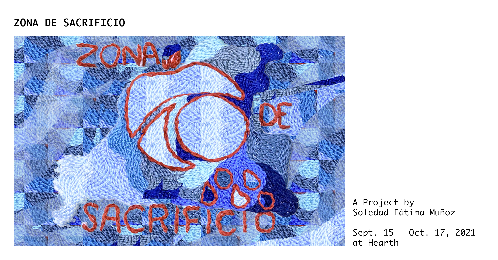

Zona de Sacrificio
A solo project by Soledad Fátima Muñoz
Curated by Rowan Lynch
Sept. 15 - Oct 17th, 2021 - No Gallery Hours October 10 & 11th (Thanksgiving)
Exhibition Pamphlet PDF | La Caravana De La Muerte PDF
Watch La Parte de Atrás de la Arpillera (The back of the Arpillera), 23 minutes, online here

Join us Friday September 17th 5-8pm for the opening day. Regular Gallery Hours are Fridays, Saturdays, Sundays and Mondays, 12-4, and by appointment.
Zona de Sacrificio (Sacrifice Zone) is a solo exhibition by artist and researcher Soledad Fátima Muñoz featuring a selection of textiles and a short film.
Zona de Sacrificio references an ongoing process of political intervention orchestrated by North American and European governments in order to profit from resource extraction globally, leaving impacted areas permanently damaged by heavy environmental alterations and economic divestment. With works referencing events related to the history of neoliberal intervention in Chile, as well as the ongoing nature of these systemic abuses, Zona de Sacrificio aims to raise awareness of Canada’s role in global resource exploitation, and draw attention to Chile’s current context, where political prisoners still await trial for involvement in a contemporary movement to change the constitution implemented by Augusto Pinochet’s american-backed military dictatorship (1973-1990).
Artworks Description:
Aguas Libres (Free Waters) amplifies the status of water as a human right, in a context where private industries have created a water crisis by allocating the majority of Chile’s water supply towards industry and agriculture. The Canadian Teacher’s Pension Plan is the majority shareholder in Chile’s private water supply, a resource that was privatized under Pinochet’s government through a 1980 Constitution heavily influenced by the neoliberal policies imported through University of Chicago operatives. During a time marked by a decade-long drought exacerbated by climate change, the Canadian Teacher’s Pension Plan has a direct hand in how Chilean people are denied access to Chilean water.
Caravana de la Muerte (The Caravan of Death) is a 17 meter long woven copper work featuring portraits memorializing victims murdered during The Caravan of Death, named for an Army death squad that executed military detainees following the Chilean coup of 1973. Following the exhibition, this work will be shipped to Chile to be installed at a memory site associated with these events.
The short film La Parte de Atrás de la Arpillera (The back of the Arpillera), 23 minutes, explores the history of the Arpillera textile as a symbol of resistance and method of documenting, denouncing, and amplifying experiences absent from a mainstream national Chilean narrative.
“Through the collection of personal histories - in the form of interviews (in-person and online), phone recordings and personal footage - filmed or sent to us by makers in Lo hermida, La Patagonia, Los Andes, Coquimbo, La Serena, Malmö, Chicago and Toronto, we wanted to make a piece that - like the Arpillera - contained the history of resistance of our ancestors and peers.” - La Parte de Atrás de la Arpillera
Artist's Bio:
Soledad Fátima Muñoz is an interdisciplinary artist, cultural worker and researcher born in her family’s exile in Canada and raised in Rancagua, Chile. Her work seeks to explore the ever-changing social spaces we inhabit and the archival properties of cloth. Through the investigation of the materiality of sound and the understanding of the woven structure as the continuation of our interconnected social gesture, her practice seeks to fabricate embodied instances that participate in the construction of a more equitable society and the creation of new archives of resistance.
In 2014 she started Genero, an audio project/label that focuses on the distribution and representation of women and non-binary artists within the sound realm. Subsequently, in 2017, she co-founded CURRENT "Feminist Electronic Art Symposium and Mentorship,” a multidisciplinary, electronic art program working with women, non-binary, and BIPOC (Black, Indigenous and People of Colour) artists in Canada and beyond. Her latest collaborative audiovisual project entitled “La Parte de Atras de la Arpillera'' features a collection of interviews with Chilean textile workers whose experiences stitch together the country’s history of resistance.
She studied Film at Universidad ARCIS in Santiago Chile, has a Diploma in Textile Arts from Capilano University in North Vancouver Canada, a Bachelor in Fine Arts Degree from Emily Carr University of Arts + Design in Vancouver and a Master in Fine Arts from the Department of Fiber and Material Studies of the School of the Art Institute of Chicago. Soledad has been the recipient of several awards, including the City of Vancouver Mayor’s Arts Award for Emerging Artist, The School of the Art Institute of Chicago New Artist Society Full Merit Scholarship, the Emily Carr University of Art + Design President’s Media Award and most recently the Textile Society of America Student and New Professionals Award.
For more information see:
Soledad Muñoz Website
Desert of Memories Project
"Teachers Increase Stake in Chile Water Utilities"
Read Arpilleras the Vessels of Chile’s Resistance, an essay by Soledad Fátima Muñoz, here